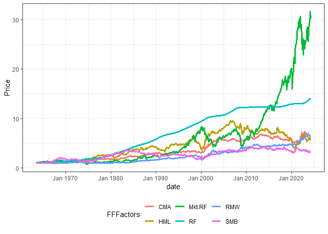
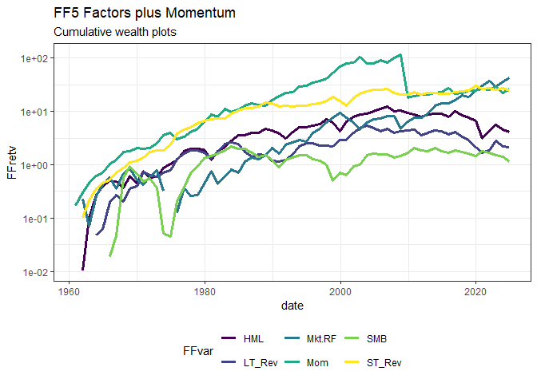

R Code to download Datasets from Kenneth French’s famous website.
Update
Version 1.1.1 corrects a small error for publication on CRAN.
Motivation
One often needs those datasets for further empirical work and it is a tedious effort to download the (zipped) csv, open and then manually separate the contained datasets. This package downloads them automatically, and converts them to a list of xts-objects that contain all the information from the csv-files.
Contributors
Original code from MasimovR https://github.com/MasimovR/. Was then heavily redacted by me.
Installation
You can install FFdownload from CRAN with
install.packages("FFdownload")or directly from github with:
# install.packages("devtools")
devtools::install_github("sstoeckl/FFdownload")Examples
Example 0: Easy Access
This is the quick-starter example. It just retrieves the data and provides it for easy usage!
library(FFdownload)
library(tidyverse)
FFdownload(inputlist = c("F-F_Research_Data_5_Factors_2x3"), output_file = "FFdata.RData", format = "tbl")
#> | | | 0% | |=================================== | 50% | |======================================================================| 100%
load("FFdata.RData")
FFdata$`x_F-F_Research_Data_5_Factors_2x3`$monthly$Temp2 |>
tidyr::pivot_longer(cols = -date, names_to = "FFFactors", values_to = "Value") |>
group_by(FFFactors) |> mutate(Price=cumprod(1+Value/100)) |>
ggplot2::ggplot(aes(x = date, col = FFFactors, y = Price)) + geom_line(lwd=1.2) +
theme_bw() + theme(legend.position="bottom")
Example 1: Monthly files
In this example, we use FFDwonload to
- get a list of all available monthly zip-files and save that files as temp.txt.
temptxt <- tempfile(fileext = ".txt")
# example_1: Use FFdownload to get a list of all monthly zip-files. Save that list as temptxt.
FFdownload(exclude_daily=TRUE,download=FALSE,download_only=TRUE,listsave=temptxt)
FFlist <- readr::read_csv(temptxt) %>% dplyr::select(2) %>% dplyr::rename(Files=x)
FFlist %>% dplyr::slice(1:3,(dplyr::n()-2):dplyr::n())
#> # A tibble: 6 × 1
#> Files
#> <chr>
#> 1 F-F_Research_Data_Factors_CSV.zip
#> 2 F-F_Research_Data_Factors_weekly_CSV.zip
#> 3 F-F_Research_Data_Factors_daily_CSV.zip
#> 4 Emerging_Markets_4_Portfolios_BE-ME_OP_CSV.zip
#> 5 Emerging_Markets_4_Portfolios_OP_INV_CSV.zip
#> 6 Emerging_Markets_4_Portfolios_BE-ME_INV_CSV.zip- Next, after inspecting the list we specify a vector
inputlistto only download the datasets we actually need.
tempd <- tempdir()
inputlist <- c("F-F_Research_Data_Factors","F-F_Momentum_Factor","F-F_ST_Reversal_Factor","F-F_LT_Reversal_Factor")
FFdownload(exclude_daily=TRUE,tempd=tempd,download=TRUE,download_only=TRUE,inputlist=inputlist)- In the final step we process the downloaded files (formatting the output data.frames as tibbles for direct proceeding):
tempf <- paste0(tempd,"\\FFdata.RData")
getwd()
#> [1] "D:/OneDrive - University of Liechtenstein/ROOT/Packages/ffdownload"
FFdownload(output_file = tempf, exclude_daily=TRUE,tempd=tempd,download=FALSE,
download_only=FALSE,inputlist = inputlist, format="tbl")
#> | | | 0% | |================== | 25% | |=================================== | 50% | |==================================================== | 75% | |======================================================================| 100%- Then we check that everything worked and output a combined file of monthly factors (only show first 5 rows).
library(timetk)
load(file = tempf)
FFdata$`x_F-F_Research_Data_Factors`$monthly$Temp2 %>%
left_join(FFdata$`x_F-F_Momentum_Factor`$monthly$Temp2, by="date") %>%
left_join(FFdata$`x_F-F_LT_Reversal_Factor`$monthly$Temp2,by="date") %>%
left_join(FFdata$`x_F-F_ST_Reversal_Factor`$monthly$Temp2,by="date") %>% head()
#> # A tibble: 6 × 8
#> date Mkt.RF SMB HML RF Mom LT_Rev ST_Rev
#> <yearmon> <dbl> <dbl> <dbl> <dbl> <dbl> <dbl> <dbl>
#> 1 Jul 1926 2.89 -2.55 -2.39 0.22 NA NA -1.76
#> 2 Aug 1926 2.64 -1.14 3.81 0.25 NA NA 1.43
#> 3 Sep 1926 0.38 -1.36 0.05 0.23 NA NA -0.07
#> 4 Okt 1926 -3.27 -0.14 0.82 0.32 NA NA -2.03
#> 5 Nov 1926 2.54 -0.11 -0.61 0.31 NA NA 0.98
#> 6 Dez 1926 2.62 -0.07 0.06 0.28 NA NA 1.95- No we do the same with annual data:
FFfive <- FFdata$`x_F-F_Research_Data_Factors`$annual$`annual_factors:_january-december` %>%
left_join(FFdata$`x_F-F_Momentum_Factor`$annual$`january-december` ,by="date") %>%
left_join(FFdata$`x_F-F_LT_Reversal_Factor`$annual$`january-december`,by="date") %>%
left_join(FFdata$`x_F-F_ST_Reversal_Factor`$annual$`january-december` ,by="date")
FFfive %>% head()
#> # A tibble: 6 × 8
#> date Mkt.RF SMB HML RF Mom LT_Rev ST_Rev
#> <yearmon> <dbl> <dbl> <dbl> <dbl> <dbl> <dbl> <dbl>
#> 1 Dez 1927 29.4 -2.2 -4.58 3.12 24.4 NA -18.7
#> 2 Dez 1928 35.6 3.73 -5.26 3.56 26.5 NA -8.82
#> 3 Dez 1929 -19.6 -30.7 11.9 4.75 19.7 NA -15.0
#> 4 Dez 1930 -31.1 -5.53 -11.8 2.41 24.1 NA -1.18
#> 5 Dez 1931 -44.8 3.07 -13.7 1.07 23.3 -4.62 27.2
#> 6 Dez 1932 -9.6 5.03 11.7 0.96 -20.6 14.1 27.9- Finally we plot wealth indices for 6 of these factors:
FFfive %>%
pivot_longer(Mkt.RF:ST_Rev,names_to="FFVar",values_to="FFret") %>% mutate(FFret=FFret/100,date=as.Date(date)) %>%
filter(date>="1960-01-01",!FFVar=="RF") %>% group_by(FFVar) %>% arrange(FFVar,date) %>%
mutate(FFret=ifelse(date=="1960-01-01",1,FFret),FFretv=cumprod(1+FFret)-1) %>%
ggplot(aes(x=date,y=FFretv,col=FFVar,type=FFVar)) + geom_line(lwd=1.2) + scale_y_log10() +
labs(title="FF5 Factors plus Momentum", subtitle="Cumulative wealth plots",ylab="cum. returns") +
scale_colour_viridis_d("FFvar") +
theme_bw() + theme(legend.position="bottom")
#> Warning in transformation$transform(x): NaNs wurden erzeugt
#> Warning in scale_y_log10(): log-10 transformation introduced infinite values.
#> Warning: Removed 11 rows containing missing values or values outside the scale range
#> (`geom_line()`).
Author/License
- Sebastian Stöckl - Package Creator, Modifier & Maintainer - sstoeckl on github and academic website
This project is licensed under the MIT License - see the license.md file for details.
Acknowledgment
I am grateful to Kenneth French for providing all this great research data on his website! Our lives would be so much harder without this boost for productivity. I am also grateful for the kind conversation with Kenneth with regard to this package: He appreciates my work on this package giving others easier access to his data sets!